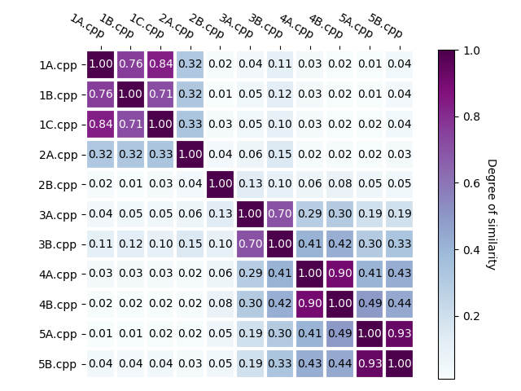

<div *ngIf="messengerService.getMessage()=='';else loggedIn">
    <div class="container">
        You are not logged in.

        Click <a routerLink="/login" style="color:red">here</a> to log in and <a routerLink="/signup"
            style="color:red">here</a> to register.
    </div>
</div>
<ng-template #loggedIn>
    <div class="h1">Results</div>
<div style="box-shadow: 0 2px 2px 0 rgba(0,0,0,0.2); padding-left: 70px; align-self: center; margin: 40px;"> 
<div style="font-size: 25px; padding-bottom: 20px; padding-top: 20px;">The pairs of files with the most similarity are: </div>

<li *ngFor="let i of rep;" style="color: rgb(77, 77, 78); font-size: 17px; margin-left: 2em; list-style-type: circle;">
    {{files[i]}} :- {{values[i]}}
</li>
<div class="row">
    <div class="column">
<div style="font-size: 25px; padding-bottom: 20px; padding-top: 20px; font-weight: 100;">Most Similar Pairs
    <br><br>
<br></div></div>
<div class="column">
<div style="font-size: 25px; padding-bottom: 20px; padding-top: 20px; font-weight: 100;" >Degrees of Similarity<br><br>
<br></div>
</div></div>
<!--Add two drop down lists here to display similarity between any two files-->

<div style="font-size: 30px; padding-top: 20px;text-align: center;">You can view the similarity between any two files here:</div>
<form [formGroup]="form" (ngSubmit)="submit()" class="form">
<div class="section">
        <label for="file1">Choose first file:</label>
        <select formControlName="file1" class="form-control">
            <option disabled>Select file</option>
            <option>Choose File</option>
            <option *ngFor="let file of all_files">{{file}}</option>
        </select>
        <label for="file2">Choose second file:</label>
        <select formControlName="file2" class="form-control">
            <option disabled>Select file</option>
            <option>Choose File</option>
            <option *ngFor="let file of all_files">{{file}}</option>
        </select>

    <button class="btn btn-primary" on_click="submit()">Submit</button>
    </div>
</form>

<div *ngIf="show;">
    <form class="form">
        <div class="section" style="font-size: 20px;">
    Percentage similarity is: {{show_val*100}}%
        </div>
    </form>    
</div>
<form class="form">
    <div class="section">
        <span style="font-size: 25px; line-height: 25px;">You can download the results here</span>
    <button class="btn btn-primary" (click)="Download()" >Download results</button>
    </div>
</form>
</div>
</ng-template>

<!--style="background-color:white; color: rgb(20, 16, 56);"-->
<!-- style="background-color:  rgb(20, 16, 56); color: white;"-->